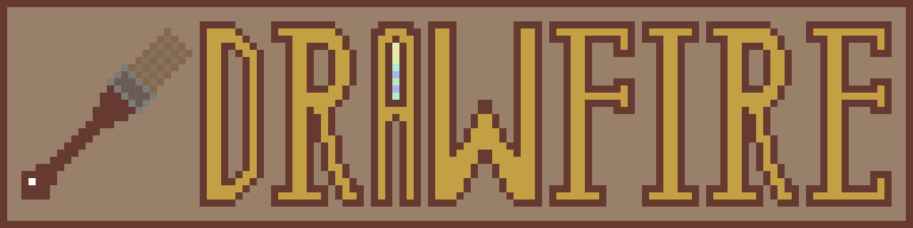

|  |
|
Latest version: 0.2.1 Source code: GitHub |

Drawfire is small drawing program desired for simplicity and quick sketching. It was built to
show what Nimfire library is capable of even on its early stages.
Currently, program allows you to pick colours from palette, switch between colours, change between
transparent and white background and save/load the image.
With Drawfire principles, saving never overwrite images, therefore you can freely load the image, do
some changes, and then save it - it will just become a copy.
Drawfire may get UI overhaul and more features in the future, once current development stages are
finished. It is however fairly low priority software.
Team
- Toma400 : lead